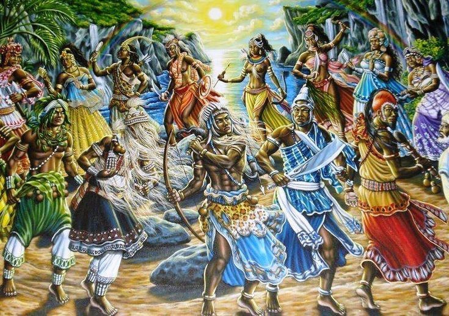
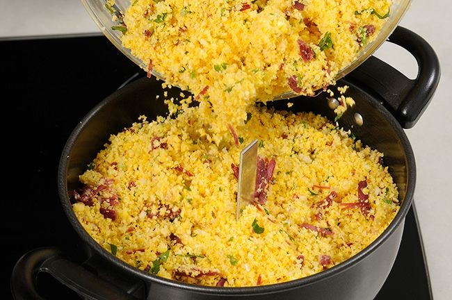
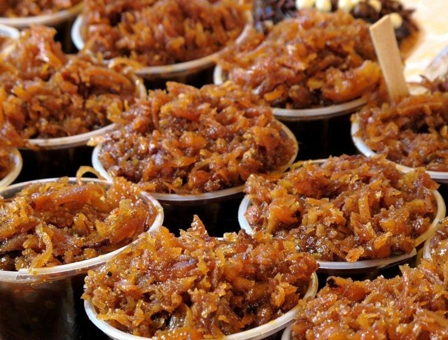
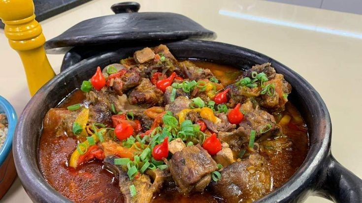

Influencia da cultura indígena na sociedade brasileira:
Essa cultura que pode ser chamada de raiz do Brasil obviamente não influenciou apenas os caiçaras mas sim o país todo em varias áreas seja na música,seja na culinária ou até mesmo na forma de tomar um descanso de tarde em uma rede depois do almoço.sim isso mesmo deitar em uma rede é uma herança indígena.

Culinária:
A culinária brasileira traz de herança muitos costumes de diversos povos indígenas, que se alimentavam principalmente de ingredientes como a mandioca, castanhas, coco, milhos, raízes e algumas folhas e frutos;além da flora os indígenas também se aproveitava da fauna pois eles também caçavam animais como a anta, o veado, a capivara e o tatu,também praticavam a pesca para se alimentar dos mais variados tipos de peixes tanto de água salgada como de água doce alguns deles eram o pirarucu, o tucunaré e o traíra. Na cultura indígena o preparo dessas comidas sempre foi uma atividade exercida pelas mulheres, elas usavam do fogo para cozinhar os alimentos no “biaribi” forno feito com um buraco no chão ou no “demoquen” grelha de madeira. Dos os ingredientes já citados os que mais se destacam são o milho, usado para fazer pamonha, canjica e a popular pipoca e a mandioca, que é muito usada até hoje e aparece em pratos como o Tacacá e o Tucupi ambos derivados da macaxeira. Com relação às bebidas, o suco do açaí e o famoso guaraná, eram cultivados no norte pelo povo Mawé, e hoje rompeu fronteiras e é consumido pelo mundo todo.


Arte:
Expressões artísticas, as influências da cultura indígena é enorme, já que muitos povos usavam da arte em diferentes rituais, sempre com muito simbolismo envolvido um exemplo é a pintura corporal feita com tinta vinda de plantas e frutos como o jenipapo e o urucu que tinha finalidade de retratar sentimentos e momentos específicos nos rituais realizados. Outra herança artística deixada pelos índios é o artesanato muito praticado pelo povo brasileiro que faz colares, pulseiras, brincos e braçadeiras, normalmente ornamentados com penas e caudas de aves, dando origem a “arte plumária”, que naquela época servia para distinguir grupos sociais.

Música e Dança:
Instrumentos de sopro e de percussão tiveram início nas flautas nativas dos índios e nos instrumentos de percussão como os chocalhos;apitos e tambores que também eram muito usados na época ditam até hoje os arranjos e os ritmos da nossa música popular brasileira. Deixaram também grande influência na dança e no canto, como é o exemplo do povo Pataxó, que entravam em harmonia com a natureza e o divino através das expressões “Awê” e/ou “Heruê”, buscando a união e a paz do povo, onde celebravam seus antepassados cantando e dançando, buscando forças para continuar em frente.

Língua:
A nossa língua também sofreu grande influência da cultura indígena, principalmente em palavras ligadas a flora e a fauna, como: abacaxi, tatu, mandioca, caju e muitas outras palavras usadas no cotidiano de todo brasileiro,o parque Ibirapuera de São Paulo quer dizer “lugar que já foi mato” ou o Rio Tietê que significa “rio verdadeiro” esses dois são derivados do Tupi-Guarani.
Influencia da Cultura Indígena na Caiçara:
A cultura indígena assim como a portuguesa e a africana também tem sua importância na cultura não só caiçara mas também na cultura de todo o nosso país, já que o Brasil é um país com frutos de uma miscigenação de culturas causada principalmente pela colonização, escravidão e pelos ciclos econômicos.Um fato curioso sobre essa influencia indígena na caiçara pode-se ver no próprio nome já que a palavra "caiçara" vem do tupi, e era utilizada para denominar a cerca que rodeava os aldeamentos jesuítas de catequização dos índios. Dia-a-dia dos caiçaras : Assim como os Índios, os Caiçaras vivem basicamente da caça e da pesca e são excelentes construtores navais, sua embarcação preferida, as “Canoas caiçaras” são sucessoras das canoas indígenas,a semelhança das “Pirogas” com as tradicionais embarcações caiçaras não são mera coincidência.

Cultura Caiçara:
A comunidade caiçara é formada pela mescla de populações indígenas, colonos portugueses e negros. Muitas práticas agrícolas e de pesca , assim como a preparação de alimentos (farinha, peixe) marcando assim a influência indígena. Ainda que essa comunidade tenha sido formada a partir de populações culturalmente tão diferentes, ao descrever o modo de vida da população caiçara, podemos defini-la como a população que habita pequenas cidades ao longo do litoral do Brasil, sendo um povo com costumes de usufruir de tudo que tenha a sua volta. A estrutura da casa caiçara tradicionalmente era feita com paredes de pau a pique e telhado de sapê de duas águas, algumas vezes caiada, o chão era de terra batida e os móveis escassos. No entanto, a cultura caiçara possui uma ligação especial com o mar, um dos fatores que a diferenciam das demais culturas.

Como é a cultura africana??
A cultura africana é uma cultura repleta de inúmeros detalhes e curiosidades, sempre carregando sua beleza, história e crença no meio de tudo que faz e é.
Religião:
As religiões tradicionais africanas, também chamadas de religiões indígenas africanas, contém manifestações culturais religiosas e espirituais originárias do continente e que continuam sendo praticadasdentro e fora do continente até os dias atuais. Tendo uma multiplicidade de religiões, mas as tradicionais é o Espiritismo, tendo vertentes como Umbanda, Candomblé e Quimbanda, sendo uma religião politeísta tendo a existência de um Deus maior que criou o Universo chamado de vários jeitos (Olodumarê, ou Olorum, Mawu, Zambi, Oxalá e etc).

Comida:
Durante todos os anos, o povo africano passou por muito sofrimento tendo grande parte de sua população escravizada e levada de seu continente para outros lugares contra sua vontade. Durante essas mudanças eles ainda tentavam manter seus costumes, levando com sigo as receitas e tradições, assim fazendo com que muitos lugares do mundo tivessem um traço de sua cultura. O Brasil é um ótimo exemplo disso, tendo inúmeras comidas de descendência africana como:
- Acarajé;
- Leite de coco;
- Rabada;
- Mungunzá;
- Cuzcuz;
- Cocada..
  
Arte:
Os povos africanos desenvolveram diversas formas artísticas ligadas às suas religiões como artefatos, máscaras, trançados de corda, estatuetas entre outros, todos feitos com artigos simples como madeira, pedra ou confeccionados com tecido. Cada artesanato é um símbolo contendo elementos do cotidiano e significados diferentes para cada povo, representando as crenças, os pensamentos ou ações que fazem parte da cultura, como a guerra e a colheita.
Danças e Músicas:
A música e a dança têm grande importância para as culturas tribais africanas. Marcadas por um ritmo feito à base de instrumentos de percussão fazendo assim as danças, geralmente, ter um ritmo e compasso rápido, permitindo movimentos diferentes e muito marcantes. A música e a dança também são muito utilizadas nas tribos em comemorações e festas, sendo praticadas por todos que estejam presentes.Alguns ritmos de origem africana são:
- Capoeira;
- Batuque;
- Lundo;
- Atabaque;
- Berimbau;
- Agogô;
- Afoxé;